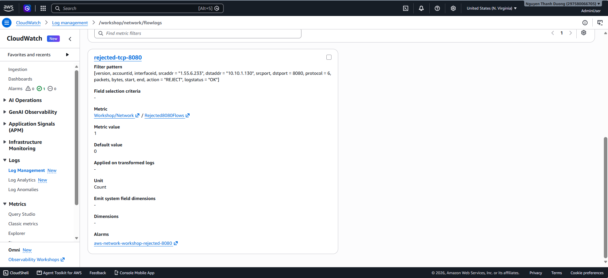
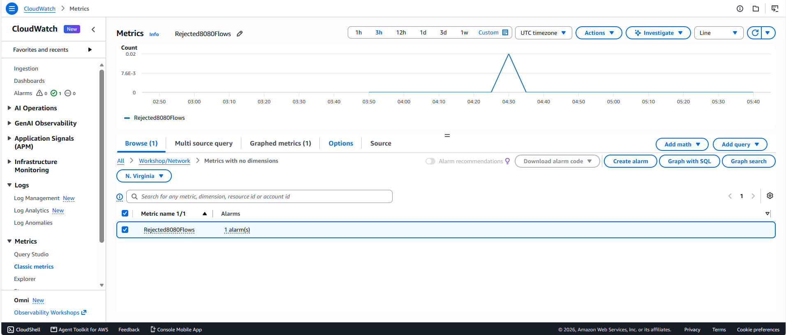
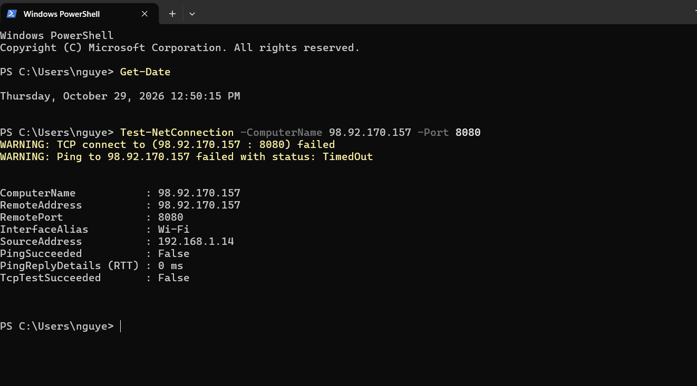
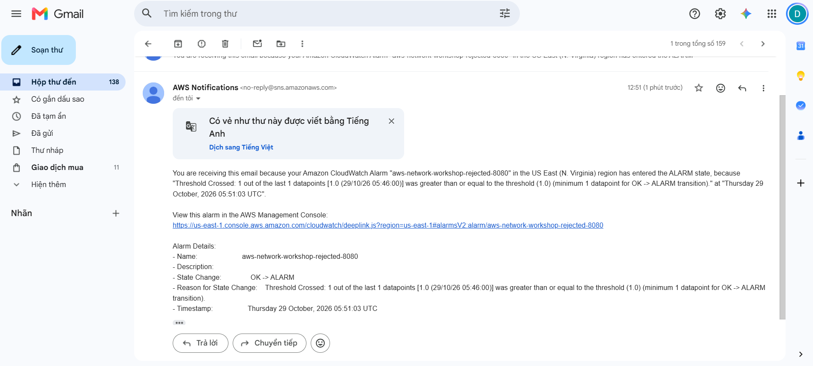
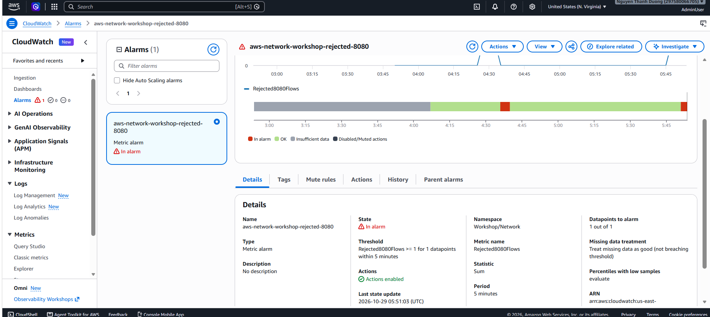

Trong phần này, chúng ta kiểm tra và xử lý những lỗi có thể xuất hiện khi cấu hình VPC Flow Logs, CloudWatch metric, alarm và Amazon SNS.
Mỗi tình huống được trình bày theo thứ tự:
Có thể sử dụng các ảnh lỗi đã ghi nhận trong quá trình thực hành và đối chiếu với cấu hình sau khi khắc phục.
Sử dụng Region US East (N. Virginia) — us-east-1 khi kiểm tra các tài nguyên của workshop.
| Tài nguyên | Tên |
|---|---|
| IAM role cho Flow Logs | workshop-flowlogs-role |
| Log group | /workshop/network/flowlogs |
| Metric filter | rejected-tcp-8080 |
| Metric namespace | Workshop/Network |
| Metric name | Rejected8080Flows |
| Alarm | aws-network-workshop-rejected-8080 |
| SNS topic | aws-network-workshop-alerts |
Trước khi kiểm thử lại, kiểm tra Public IP của máy thực hiện và các địa chỉ của EC2.
Public IP máy kiểm thử có thể xem tại:
https://checkip.amazonaws.com/
Nếu IP thay đổi, cập nhật Source của quy tắc HTTP trong Security Group và trường srcaddr trong metric filter.
Trong phần chọn metric, không xuất hiện namespace Workshop/Network hoặc metric Rejected8080Flows.
Mở:
CloudWatch → Logs → Log Management → /workshop/network/flowlogs → Metric filters
Nếu trang hiển thị Metric filters (0), cần tạo metric filter.
Nếu đã có bộ lọc, tích chọn rejected-tcp-8080 → Edit và kiểm tra:
| Mục | Giá trị |
|---|---|
| Filter name | rejected-tcp-8080 |
| Metric namespace | Workshop/Network |
| Metric name | Rejected8080Flows |
| Metric value | 1 |
| Default value | 0 |
| Dimensions | Để trống |
Đối chiếu Filter pattern với cấu hình:
[version, accountid, interfaceid, srcaddr = "1.55.6.233", dstaddr = "10.10.1.130", srcport, dstport = 8080, protocol = 6, packets, bytes, start, end, action = "REJECT", logstatus = "OK"]
Trong ví dụ:
1.55.6.233 là Public IP máy kiểm thử.10.10.1.130 là Private IPv4 của EC2.Thay bằng các địa chỉ hiện tại nếu chúng đã thay đổi. Không thêm /32 vào srcaddr.
Hoàn tất các bước lưu, sau đó tạo lưu lượng kiểm thử mới đến cổng 8080.
Metric filter chỉ xử lý dữ liệu mới sau khi được tạo. Những log đã có từ trước không được tính lại.
Vị trí chụp ảnh 01: Tab Metric filters có bộ lọc đã lưu và thông tin metric.

Biểu đồ xuất hiện giá trị thập phân trong khi mục tiêu là theo dõi tổng số bản ghi khớp bộ lọc.
Statistic của biểu đồ đang được đặt là Average.
Average biểu diễn giá trị trung bình. Sum biểu diễn tổng giá trị trong khoảng thời gian được chọn.
Mở:
CloudWatch → Metrics → Classic metrics
Chọn:
Workshop/Network → Metrics with no dimensions → Rejected8080Flows
Trong tab Graphed metrics, đặt:
| Mục | Giá trị |
|---|---|
| Statistic | Sum |
| Period | 5 minutes |
| Khoảng thời gian | Khoảng chứa đợt kiểm thử |
Bấm Refresh, sau đó đưa chuột lên điểm dữ liệu để đọc giá trị.
Việc đổi Statistic trên biểu đồ chỉ thay đổi cách hiển thị dữ liệu. Cần kiểm tra cấu hình alarm riêng để bảo đảm alarm cũng sử dụng Sum và Period 5 minutes.
Vị trí chụp ảnh 02: Biểu đồ có tên metric, Statistic Sum, Period 5 minutes và dữ liệu của đợt kiểm thử.

Khi chạy lệnh, xuất hiện thông báo:
'Test-NetConnection' is not recognized as an internal or external command
Lệnh đang được chạy trong Command Prompt, trong khi Test-NetConnection là lệnh PowerShell.
Trong cửa sổ Command Prompt, nhập:
powershell
Khi đầu dòng xuất hiện PS, chạy:
Get-Date
Test-NetConnection -ComputerName 98.92.170.157 -Port 8080
Thay địa chỉ nếu Public IPv4 của EC2 đã thay đổi.
Với cổng 8080 đang bị chặn trong workshop, kết quả mong đợi là:
TcpTestSucceeded : False
Kết quả này cho thấy lệnh đã chạy và kết nối TCP không thành công. Đối chiếu thêm bản ghi REJECT trong Flow Logs để xác minh lưu lượng đã đến AWS.
Vị trí chụp ảnh 03: PowerShell hiển thị lệnh, RemotePort 8080 và kết quả kiểm thử.

Mở:
Amazon SNS → Topics → aws-network-workshop-alerts → Subscriptions
Kiểm tra email đăng ký đã được xác nhận.
Nếu hiển thị Pending confirmation:
Trong topic aws-network-workshop-alerts, bấm Publish message.
Tại Subject, nhập:
Workshop 5.7 - SNS delivery test
Trong Message body, chọn Identical payload for all delivery protocols và nhập:
This message tests email delivery from the AWS network workshop SNS topic.
Bấm Publish message, sau đó kiểm tra hộp thư và thư mục Spam/Junk.
Nếu nhận được email, đã có bằng chứng SNS có thể gửi thông báo đến hộp thư tại thời điểm kiểm thử.
Email thử nghiệm này xác minh chức năng gửi thư của SNS. Để xác minh thông báo từ CloudWatch, tiếp tục kiểm tra hành động của alarm.
Vị trí chụp ảnh 04: Email thử nghiệm có tiêu đề và nội dung vừa gửi.

Mở:
CloudWatch → Alarms → aws-network-workshop-rejected-8080
Đối chiếu:
| Vị trí | Nội dung cần kiểm tra |
|---|---|
| Details | Actions enabled |
| Actions | Thông báo khi In alarm đến đúng SNS topic |
| History | Thời gian chuyển trạng thái và kết quả thực thi hành động |
| SNS Access policy | Cho phép CloudWatch gửi thông báo với ARN alarm phù hợp |
SNS topic phải là:
aws-network-workshop-alerts
Trong SNS Access policy, kiểm tra:
cloudwatch.amazonaws.com.sns:Publish.CloudWatch kích hoạt hành động thông báo khi alarm chuyển trạng thái. Nếu alarm tiếp tục giữ nguyên ALARM, mỗi lần thử thêm cổng 8080 sẽ không tạo một email mới.
Để kiểm thử một lần chuyển trạng thái mới, ngừng tạo lưu lượng và chờ alarm trở về OK, sau đó thực hiện lại phép thử ở phần 5.5.
Vị trí chụp ảnh 05: Tab History hiển thị sự kiện chuyển trạng thái và kết quả thực thi hành động.

Mở:
VPC → Your VPCs → chọn VPC workshop → Flow logs
Kiểm tra trạng thái và thông báo lỗi.
| Hiện tượng | Cách xử lý |
|---|---|
| Active nhưng chưa có log | Tạo lưu lượng mới, kiểm tra đúng log group và chờ quá trình chuyển dữ liệu |
| Không thấy log trong khoảng thời gian đang chọn | Mở rộng khoảng thời gian hoặc chọn Custom bao gồm lúc kiểm thử |
| Access error | Kiểm tra IAM role, quyền ghi CloudWatch Logs và Trust relationships |
| Có SKIPDATA | Kiểm tra bản ghi bị bỏ qua và thông tin lỗi chuyển log |
Dữ liệu ban đầu có thể mất 10 phút hoặc lâu hơn để xuất hiện.
Nếu có Access error, mở:
IAM → Roles → workshop-flowlogs-role
Kiểm tra:
vpc-flow-logs.amazonaws.com assume role.Trạng thái Active chỉ phản ánh trạng thái Flow Log. Cần kiểm tra bản ghi thực tế để xác nhận việc chuyển dữ liệu.
Tương tự, alarm OK có thể chịu ảnh hưởng của cấu hình xử lý dữ liệu thiếu. Không dùng riêng trạng thái OK để kết luận toàn bộ hệ thống đã hoạt động.
Với mỗi lỗi đã thực sự gặp, ghi lại:
| Nội dung | Thông tin cần ghi |
|---|---|
| Hiện tượng | Thông báo lỗi hoặc hành vi quan sát được |
| Nguyên nhân | Kết quả kiểm tra xác định nguyên nhân |
| Cách khắc phục | Thao tác đã thực hiện |
| Xác minh | Dữ liệu hoặc kết quả sau khi sửa |
| Bằng chứng | Ảnh trước và sau khi xử lý |
Những tình huống chưa xảy ra có thể trình bày dưới dạng hướng dẫn chẩn đoán, không ghi là lỗi đã thực tế phát sinh.